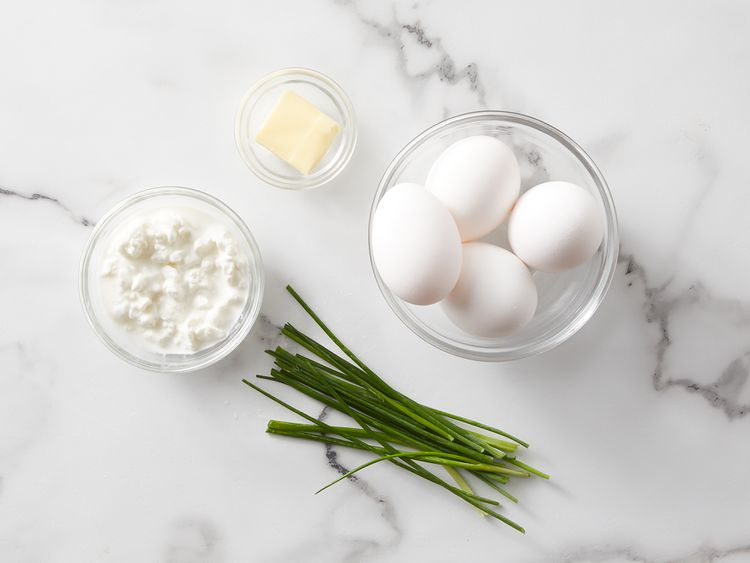
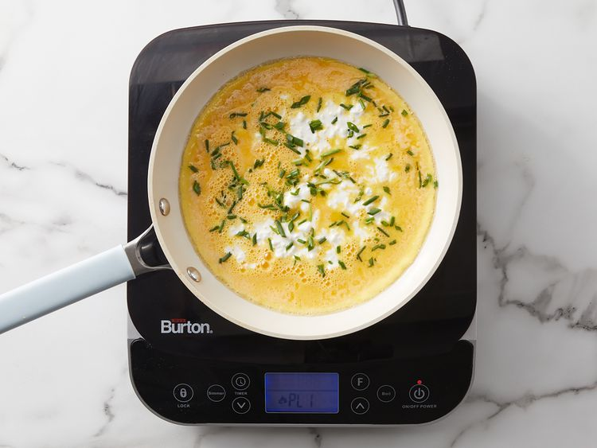

These scrambled eggs with cottage cheese are creamy, fluffy, and make a delicious change from regular scrambled eggs. Perfect with a slice of tomato and turkey bacon for a delicious and fast low-carb breakfast.
Ingredient:
Directions:
Step 1
Gather all ingredients.
Step 2
Melt butter in a skillet over a medium heat. Pour beaten into the skillet; let cook undisturbed until the bottom of eggs begins to firm, 1 to 2 minutes.
Step 3
Stir cottage chesse and chives into eggs and season with black pepper.
Step 4
Cook and stir until eggs are nearly ste, 3 to 4 minutes more.